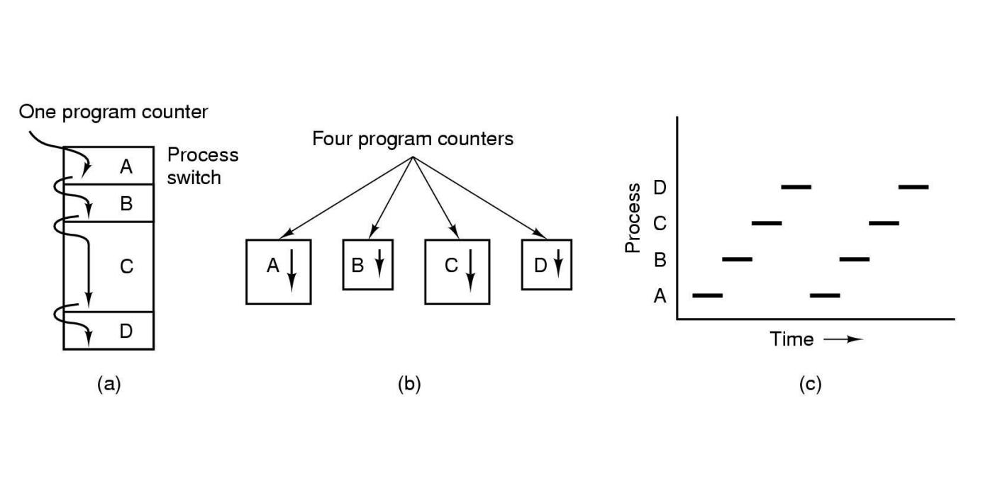

Traversy Media Bootcamp
We make learning web development easy
Become a fullstack web dev in 3 months
Процесс гэж юу вэ?
-
Process
Процесс гэдэг нь үйлдэлийн системийн удирдлаган доор, төв процессорт гүйцэтгэх ажлыг хэлнэ.

Процессын загварууд

Загвар(A)
Бүх программ нэгэн зэрэг нэг процесст ажилна
Загвар(B)
Бие даасан дараалласан процесс ба процесс тус бүр өөрийн хяналтын урсгалтай
Загвар(C)
Заасан агшинд зөвхөн нэг процесс ажиллах бөгөөд хэсэг хугацааны дараа дараагийн процесс ажиллана
Санах ой дахь процесс - Process in memory
-
Санах ой дахь үйл явц
-
Програмчлалын техник дэх үйл явц
-
Боловсруулалтын ашиг тус, сул тал